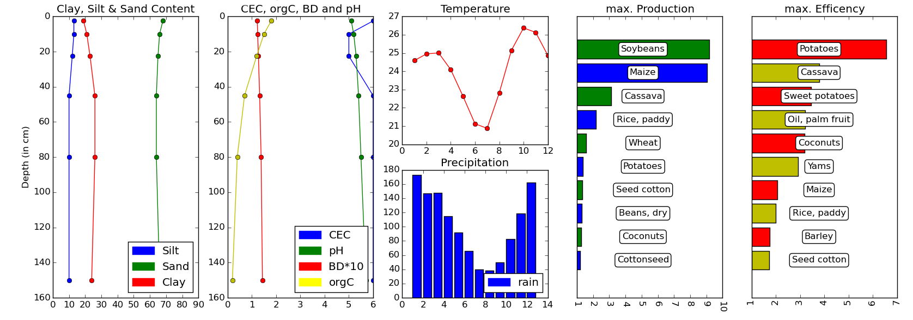
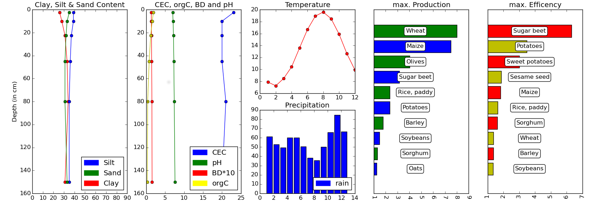
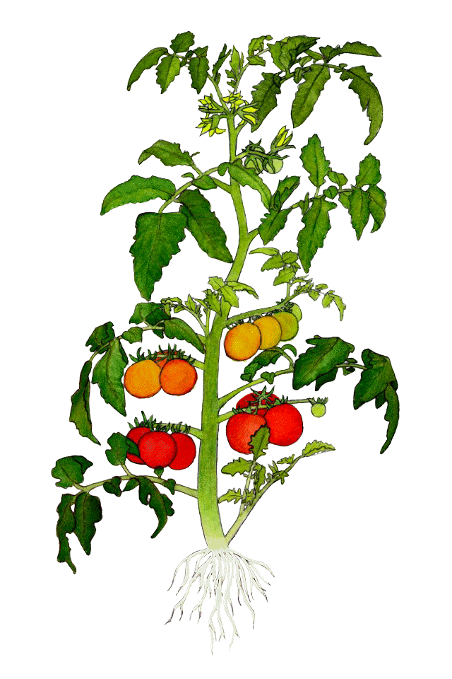
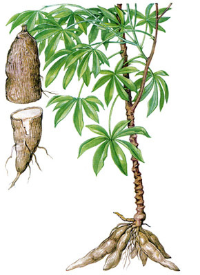
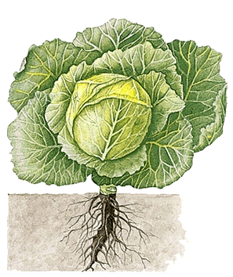

Wilkkommen bei PC4U .
Unsere Idee ist so einfach wie bestechend. Wir nutzen freie Geodaten APIs (online Datenbanken) um für jeden Ort der Welt die TopTen der für den Standort am besten geeignetsten Kulturpflanzen vorzuschlagen.
Wo stehen wir jetzt?
Auf dem unten gezeigten Schritt. Mensch muss Programmierer sein um die API Abfragen stellen zu können und diese Daten anschließend auszuwerten, aber es funktioniert:
$ cd /home/PC4U/python/
$ python PC4U.py (lat = -12.774332) (lon = 51.2344)
Geo API Results / Brazil nearest station Acorizal
-> Avg Temp: 23.0
-> Total mm/a: 1225.0
-> Avg Clay: 23
-> Avg Sand: 65
-> Avg Silt: 11
-> Avg pH: 5.36666666667
-> Avg CEC: 5
Wie lassen sich die Daten darstellen?
Zum Beispiel als Graph wie auf dem unten gezeigten Beispiels eines Acrisols in Brasilien
oder eines Cambisols in Italien, samt Klimadaten der Weltbank und Anbaustatistiken der Welternährungsorganisation (FAO)
Wo wollen wir hin?
Zu einer benutzerfreundlichen Oberfläche. Zu einer einfachen Bedienung im Browser oder auf dem Handy. Zu einer interaktiven Open-Source Datenbank, welche Empfehlungen auf Basis der Schwarmintelligenz ihrer Nutzer mit einer Prise Expertenwissen mischt. Zu einem offenen Projekt. In allen Sprachen. Für alle Menschen. Kostenlos und Werbefrei.
  Authors and Contributors
Kontakt @rob-van-b